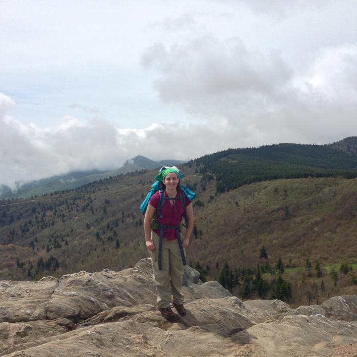
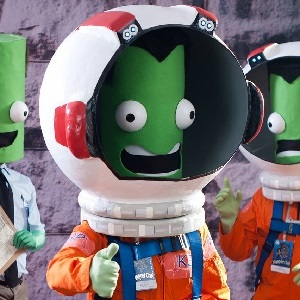

Hi, I'm Ali!

Born and raised in Miami, Florida, I began to have an interest in video games from a young age. After burning through my family’s long distance minutes calling my uncle for advice on Myst at the age of 7, we knew the passion was here to stay. As a high schooler I discovered the “Computational Media” program at the Georgia Institute of Technology. Immediately, I knew the major was for me - it combined computer science and digital media and provided the perfect blend of creativity and logic.At Georgia Tech, I discovered a strong interest for programming and formed a camaraderie with my engineering-minded peers. I took as many game development-related classes as possible, and participated in events such as Global Game Jam and the Microsoft College Puzzle Challenge. After graduating with my Bachelors of Science in 2011, I made it my goal to be part of the games industry.
After graduation, I was hired at the virtual world company, Kaneva. In my 4 years at there, I became the lead UI engineer, mentored another engineer, and working on almost all of the game’s core menus including the HUD, inventory, tutorial, and many others. In 2014, I lead a complete overhaul of the game’s HUD from the code design document to release. In addition, I created a menu animation system that has been used by several engineers to create dynamic menus.

In June 2015, I accepted a position at Red 5 Studios in Irvine, CA as a UI Programmer. There, I got valuable experience working on a larger team and large-scale game. My work included developing/updating many of the games menus and HUD elements, creating libraries to standardize various widgets, and working to optimize our UI.From 2016 to 2019 I worked at MobilityWare, where I was excited to start developing professionally in Unity, an engine I had enjoyed working in for personal projects for many years. There I developed casino mobile games, and enjoyed participating in the yearly company game jams. One of my pitches for game jam even ended up being developed into a full title!
Currently I am an engineer at Second Dinner in Irvine creating systems in Unity for our upcoming mobile Marvel game!
In my spare time I enjoy playing games, reading, camping, rock climbing, cooking, sewing, and spending time with friends. I love to participate in game jams, and work on personal games with my friends. I am a big science fiction and fantasy fan, both in literature and film. When I am not on the computer, I love being outdoors, and doing hands-on, creative activities. Recently I have been trying my hand in costuming, even winning the Best Group Costume award at Dragon*Con for a Kerbal Space Program cosplay (above) with friends!